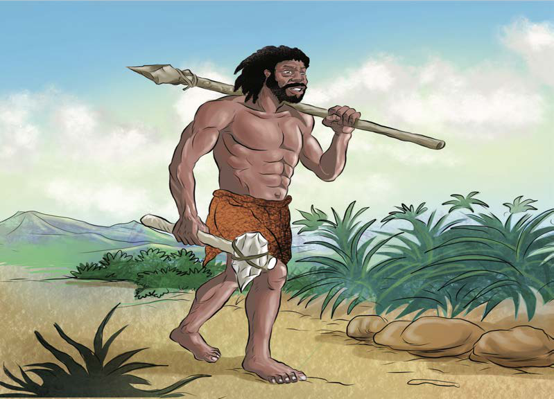

Watu wote walifanya kazi pamoja katika kipindi cha ujima. Mfano katika shughuli za uwindaji, waliwinda pamoja na mawindo yaliyopatikana waligawana kwa usawa. Aina hii ya ushirikiano na uhusiano iliondoa mianya ya unyonyaji, ubaguzi na dhuluma kutokana na kuwapo kwa usawa katika umiliki na ugawaji wa rasilimali. Pia, kutafuta maslahi kwa pamoja kuliongeza uhusiano katika jamii za kale. Umiliki wa rasilimali katika jamii kama mifugo na ardhi ulikuwa wa pamoja na siyo wa binafsi. Hii iliondoa matabaka, ya wale wenye nacho kwa wingi na wasiokuwa nacho. Watu wote walikuwa sawa. Mgawanyo wa kazi wakati wa ujima ulizingatia jinsi na rika. Hii ilisaidia kuweka usawa katika kazi kulingana na uwezo, uzoefu, umri na majukumu katika jinsi. Kila mtu alifanya kazi kwa kujituma na kwa bidii. Mfumo wa ujima ulikuwapo zaidi katika hatua za awali za maendeleo ya jamii. Mfumo wa ujima ulisaidia kukuza ushirikiano na uhusiano wenye misingi ya usawa katika jamii za kale.